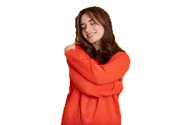
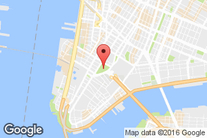

Om oss!

Alex – Ägare

Oskar – Barista

Omar – Barista

Sara – Barista
Kafé Solglimt grundades med en enkel idé – att skapa en plats där människor kan stanna upp, njuta av gott kaffe och känna sig som hemma. Det som började som en liten dröm om gemenskap och hantverk har vuxit till ett kafé där kvalitet, värme och lugn alltid står i centrum. Med kärlek till traditionella smaker och en modern känsla vill Kafé Solglimt vara en solglimt i vardagen för alla som kliver in genom dörren.
